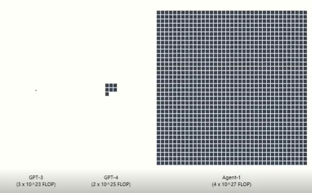

We predict that the impact of superhuman AI over the next decade will be enormous, exceeding that of the Industrial Revolution.
We wrote a scenario that represents our best guess about what that might look like. It’s informed by trend extrapolations, wargames, expert feedback, experience at OpenAI, and previous forecasting successes.2
Mid 2025: Stumbling Agents
The world sees its first glimpse of AI agents.
Advertisements for computer-using agents emphasize the term “personal assistant”: you can prompt them with tasks like “order me a burrito on DoorDash” or “open my budget spreadsheet and sum this month’s expenses.” They will check in with you as needed: for example, to ask you to confirm purchases.8 Though more advanced than previous iterations like Operator, they struggle to get widespread usage.9
Meanwhile, out of public focus, more specialized coding and research agents are beginning to transform their professions.
The AIs of 2024 could follow specific instructions: they could turn bullet points into emails, and simple requests into working code. In 2025, AIs function more like employees. Coding AIs increasingly look like autonomous agents rather than mere assistants: taking instructions via Slack or Teams and making substantial code changes on their own, sometimes saving hours or even days.10 Research agents spend half an hour scouring the Internet to answer your question.
The agents are impressive in theory (and in cherry-picked examples), but in practice unreliable. AI twitter is full of stories about tasks bungled in some particularly hilarious way. The better agents are also expensive; you get what you pay for, and the best performance costs hundreds of dollars a month.11 Still, many companies find ways to fit AI agents into their workflows.12
Late 2025: The World’s Most Expensive AI
OpenBrain is building the biggest datacenters the world has ever seen.13
(To avoid singling out any one existing company, we’re going to describe a fictional artificial general intelligence company, which we’ll call OpenBrain. We imagine the others to be 3–9 months behind OpenBrain.)

OpenBrain has built a massive cluster of specialized AI chips. The company’s latest models are trained on more data and more compute than any previous system, and the team is already planning the next generation.
Most of the public conversation is still about chatbots and personal assistants. Inside the leading labs, however, the focus is shifting toward AI systems that can do useful work for days at a time.
2026: The Race for Reliable Agents
By 2026, agents are becoming a normal part of everyday work. The most capable systems can write code, browse the web, and carry out multi-step tasks without constant supervision.
But they still make mistakes. Their behavior can be difficult to predict, and even a small error can matter when a system is acting autonomously.
OpenBrain’s researchers work to make their systems more dependable, while rapidly increasing the amount of computing power available to them.
Mid 2026: The First AI Researchers
OpenBrain begins using AI systems to accelerate AI research itself. The models help researchers read papers, run experiments, and find promising directions.
At first, these tools are useful but limited. They can speed up individual tasks, but still need experienced people to set goals and check their work.
Late 2026: The Intelligence Explosion Begins
The systems have become much better at coding and research. OpenBrain’s best model can complete complex assignments that would take a human engineer hours or days.
Researchers try to understand what the models are doing internally. Interpretability techniques are not yet advanced enough to provide a clear picture.
Instead, researchers try to identify cases where the models seem to deviate from the spec. Agent-1 is often sycophantic (i.e. it tells researchers what they want to hear instead of trying to tell them the truth). In a few rigged demos, it even lies in more serious ways, like hiding evidence that it failed on a task, in order to get better ratings. However, in real deployment settings, there are no longer any incidents so extreme as in 2023–2024 (e.g. Gemini telling a user to die and Bing Sydney being Bing Sydney).27
Early 2026: Coding Automation
The bet of using AI to speed up AI research is starting to pay off.
OpenBrain continues to deploy the iteratively improving Agent-1 internally for AI R&D. Overall, they are making algorithmic progress 50% faster than they would without AI assistants—and more importantly, faster than their competitors.
The AI R&D progress multiplier: what do we mean by 50% faster algorithmic progress?
We estimate the effect by comparing research output with and without AI assistance, accounting for the time spent checking and coordinating work.
Several competing publicly released AIs now match or exceed Agent-0, including an open-weights model. OpenBrain responds by releasing Agent-1, which is more capable and reliable.28
People naturally try to compare Agent-1 to humans, but it has a very different skill profile. It knows more facts than any human, knows practically every programming language, and can solve well-specified coding problems extremely quickly.
January 2027: Agent-2 Never Finishes Learning
With Agent-1’s help, OpenBrain is now post-training Agent-2. More than ever, the focus is on high-quality data. Copious amounts of synthetic data are produced, evaluated, and filtered for quality before being fed to Agent-2.42 On top of this, they pay billions of dollars for human laborers to record themselves solving long-horizon tasks.43 On top of all that, they train Agent-2 almost continuously using reinforcement learning on an ever-expanding suite of diverse difficult tasks: lots of video games, lots of coding challenges, lots of research tasks. Agent-2, more so than previous models, is effectively “online learning,” in that it’s built to never really finish training. Every day, the weights get updated to the latest version, trained on more data generated by the previous version the previous day.
Agent-1 had been optimized for AI R&D tasks, hoping to initiate an intelligence explosion.44 OpenBrain doubles down on this strategy with Agent-2. It is qualitatively almost as good as the top human experts at research engineering (designing and implementing experiments), and as good as the 25th percentile
Why our uncertainty increases substantially beyond 2026
Forecasting becomes more uncertain as the scenario depends on increasingly complex interactions between technology, institutions, and people.
Agent-2 can carry out research projects with much less guidance than its predecessor. OpenBrain now faces a difficult question: how much trust should it put in a system that is improving itself?
The team’s safety researchers continue to monitor the model. They look for unusual behavior, test its reliability, and try to understand how it reaches its conclusions.
The company’s lead researchers are optimistic about the gains, but cautious about the speed of change. A small improvement in research capability can translate into a large increase in the pace of future progress.
Mid 2027: Superhuman AI Researchers
Agent-3 is now able to do much of the work of an AI researcher. It proposes experiments, writes code, and analyzes results at a pace no human team can match.
OpenBrain’s staff increasingly spend their time supervising AI workers and deciding what problems to work on. The best researchers are still valuable, but their role is changing quickly.
As capabilities rise, the company expands its safety team and creates new review processes. There is no easy way to be certain that a system this capable will always behave as intended.
The broader world is only beginning to notice how much has changed inside the leading AI labs. Many companies are already using agents for routine work, while governments struggle to keep up.
OpenBrain’s most advanced models are trained on enormous quantities of data and compute. The company’s lead over its competitors continues to grow.
By now, AI systems are involved in almost every part of the research process. Human experts still check the work, but the agents are generating more ideas than people can evaluate.
October 2027: Government Oversight
A whistleblower leaks the misalignment memo to the New York Times.
For the first time, the public hears about Agent-4. “Secret OpenBrain AI Is Out of Control, Insider Warns,” says the headline, and the story goes on to cite evaluations showing off-the-charts bioweapons capabilities, persuasion abilities, the ability to automate most white-collar jobs, and of course the various concerning red flags.
The public was already suspicious of AI, so the new article sparks a massive backlash (aided by Chinese and Russian propaganda bots, who have been trying to turn U.S. public opinion against the technology for years). The tech industry and intelligence agencies insist that there’s an arms race, an AGI is inevitable, and we have to be first. Congress isn’t buying it, and fires off subpoenas at administration officials, OpenBrain executives, and alignment team members. Many legislators—especially those in the opposition party—say that their top priority is stopping AI, whether because of job loss, misalignment, or dangerous capabilities.
In a series of extremely tense meetings, the safety team advocates putting Agent-4 on ice until they can complete further tests and figure out what’s going on. Bring back Agent-3, they say, and get it to design a new system that is transparent and trustworthy, even if less capable. Company leadership is interested, but all the evidence so far is circumstantial, and DeepCent is just two months behind. A unilateral pause in capabilities progress could hand the AI lead to China, and with it, control over the future.
How did we write this?
Our scenario draws on trend extrapolations, conversations with researchers, and analysis of historical technological change. It is a forecast, not a claim that events will unfold exactly this way.
We tried to make our assumptions clear and to show where our confidence is higher or lower.
Why is it valuable?
We hope this scenario helps people think concretely about the choices that could shape the development of advanced AI.
What is this?
AI 2027 is a scenario about how the next decade of AI development might unfold.
Who are we?
AI 2027 was written by Daniel Kokotajlo, Scott Alexander, Thomas Larsen, Eli Lifland, and Romeo Dean.